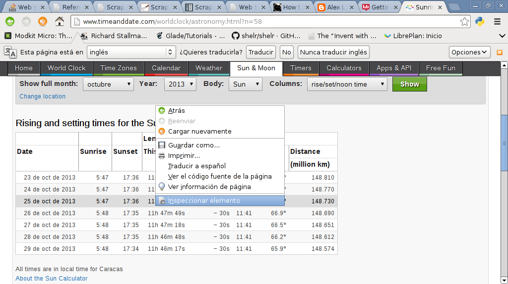
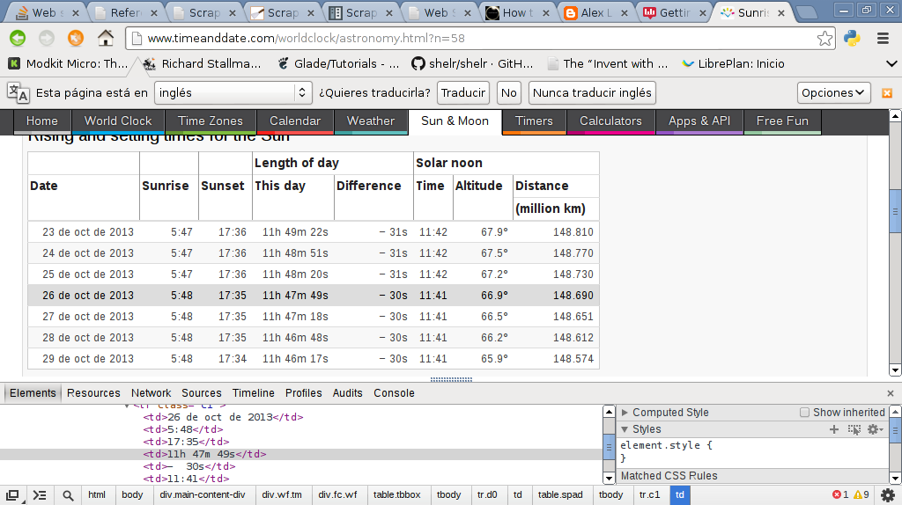

El webscraping es una técnica utilizada para extraer datos de una página web por medio de herramientas (más información en wikipedia).
Para Python existen varias herramientas:
urllibyurlopen.Beautiful Soup 4(introducción en artículo anterior).Python Mechanize(un artículo inicial y espero publicar algunos más).- Scrapy.
Selenium.pyquery.ScrapemarkWebscrapingScraperWiki
En otros artículos se explicará el uso de cada herramienta mencionada. Ahora toca mostrar otro par de ejemplos de BeautifulSoup4.
El primer ejemplo captura la fecha y hora de la salida del sol para Venezuela del sitio timeanddate.
A continuación se muestra una imagen de la página timeanddate de la salida del sol en Venezuela.

A continuación se muestra la página timeanddate donde se va a inspeccionar el elemento de la fila mostrada en la imagen anterior:

Luego se muestra la imagen el código html de la fila mostrada en la imagen anterior:

El código se muestra a continuación:
#!/usr/bin/env python
#Importar urllib2 y BeautifulSoup
import urllib2
from BeautifulSoup import BeautifulSoup
#Se crea la instancia y se abre el url de timeanddate
#buscando la informacion de la hora de salir el sol en Venezuela
soup = BeautifulSoup(urllib2.urlopen('http://www.timeanddate.com/worldclock/astronomy.html?n=58').read())
#Se busca la palabra table, y de ahi class y se busca el contenido
#de cada columna de la tabla.
for row in soup('table', {'class': 'spad'})[0].tbody('tr'):
tds = row('td')
#Se muestra la fecha y hora de la salida del sol
print tds[0].string, tds[1].string
El resultado de la ejecución es la siguiente:
23 Oct 2013 05:47
24 Oct 2013 05:47
25 Oct 2013 05:47
26 Oct 2013 05:48
27 Oct 2013 05:48
28 Oct 2013 05:48
29 Oct 2013 05:48
El otro ejemplo es un código más ordenado de como extraer los enlaces de una página web.
En este caso se pedirá desde la línea de comandos el url del sitio que se desea extraer los urls, en vez de usar urllib2 se usará con beautifulsoup4 la librería request.
A continuación el código:
#!/usr/bin/env python
#Se importa BeautifulSoup
from bs4 import BeautifulSoup
#Se importa requests
import requests
#Se crea la clase Extraer
class Extraer:
def __init__(self,url):
#Se asocia el url a self.__url
self.__url = url
#Se crea el método Enlaces, donde se crea una lista vacía
#donde se lee el url con requests.get y se busca el tag a
#luego se agrega a la lista cada link donde aparece el texo href
#Se retorna la lista
def Enlaces(self):
self.__enlaces = []
for link in BeautifulSoup(requests.get("http://" +url).text).find_all('a'):
self.__enlaces.append((link.get('href')))
return self.__enlaces
#Se ejecuta este script
if __name__ == "__main__":
#Se pide el url desde la línea de comandos
url = raw_input("Escriba el url del sitio que desea extraer informacion: ")
#Se crea la instancia de la clase donde se le pasa el url
ws = Extraer(url)
#Se muestra el texto Enlaces
print "Enlaces: "
#Se muestra cada enlace extraído
for enlace in ws.Enlaces():
print enlace
El resultado se muestra a continuación:
ernesto@grievous:~/bin/python/webscraping$ python ej1.py
Escriba el url del sitio que desea extraer informacion: 127.0.0.1:8000
Enlaces:
/
/radios/pagina/1/
/acerca/
/login/
¡Haz tu donativo! Si te gustó el artículo puedes realizar un donativo con Bitcoin (BTC) usando la billetera digital de tu preferencia a la siguiente dirección: 17MtNybhdkA9GV3UNS6BTwPcuhjXoPrSzV
O Escaneando el código QR desde la billetera:

Comments !